XL hydraulic CNC press brakes, 66 – 661 US tons (60 – 600 t) × 5 – 20 ft
XL 1560 – XL 60600 · 18 models
-

-
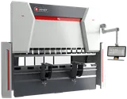
-
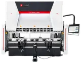
-
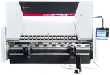
-
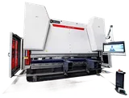
-
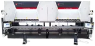
-
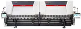
-
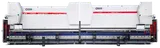
-
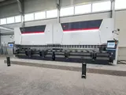
-
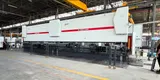
-
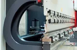
-
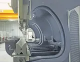
-
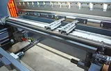
-
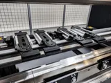
-
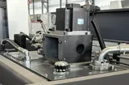
-
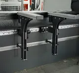
-
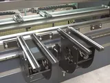
-
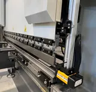
-
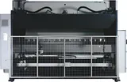
-
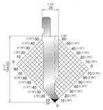
-
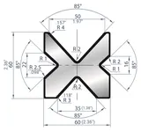
-
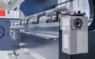
-
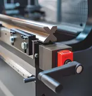
-
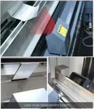
-
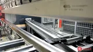
-
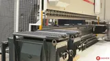
-
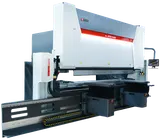
-
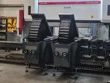
-
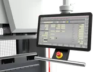
-
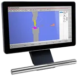
-
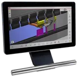
-
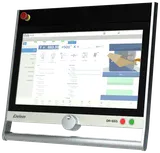
-
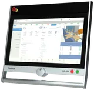
-
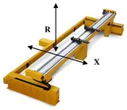
-
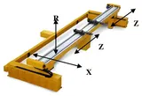
-
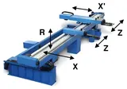
-
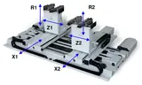
-
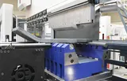
-
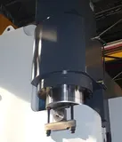
-
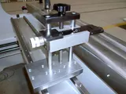
-
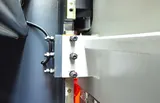
-
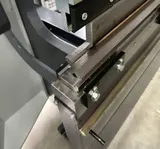
-
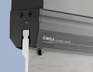
-
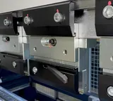
-
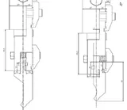
-
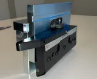
-
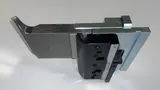

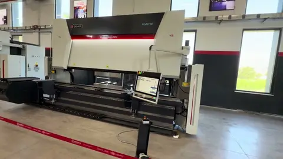
XL 13 ft × 220 ton (200 t) with laser angle measurement and sheet follower
DENER XL 13 ft × 220 ton (200 t) CNC MILD HYBRID press brake with WILLA hydraulic punch and die holder
Videos 1 – 3 of 47
The Dener XL is the hydraulic press brake most Canadian shops buy from us: a stress-relieved monoblock frame, servo-valve hydraulics at constant pressure, Y1-Y2 ram axes and an X back gauge on ball screw and linear guides, driven from a 15.6″ ESA S840 2D graphic control — the operator draws the part and the control works out the sequence, tonnage and back-gauge positions. Eighteen models from 66 US tons (60 t) × 5 ft to 661 US tons (600 t) × 20 ft on the same frame design: the 5 to 10 ft machines to 353 US tons (320 t) for job-shop sheet work, the 12, 13 and 20 ft machines to 661 US tons (600 t) with up to 26.8″ daylight, 17.7″ stroke and a 23.6″ throat on the 400 and 600-ton (363 and 544 t) sizes for deep boxes and large profiles (the 60600 sits in a pit). European-style tooling and front supports come with every machine; the options run from CNC crowning and 6-axis back gauges to angle measurement, sheet followers and robot cells, and for longer work Dener builds tandem machines — two XLs on one control bending to 60 ft and 1,800 US tons (1,633 t).
Standard equipment
- Monoblock welded frame, stress-relieved and machined in one setting
- 5 to 20 ft bending lengths, 66 to 661 US tons (60 to 600 t); 23.6″ (600 mm) throat on the 400 and 600 t (441 and 661 US tons) machines
- ESA S840 15.6″ 2D graphic touch-screen CNC control (Italy)
- 2D offline programming software for the CNC control
- Heavy-duty X-axis back gauge on servo motor, ball screw and linear guides, with 2 finger stops adjustable by hand in height and lateral position
- Y1, Y2 ram axes on linear scales
- DSP-AP laser finger protection with MCS safety PLC
- 2 front supports: sliding arms on linear rail with manual height adjustment
- European (Promecam) tool clamping with segmented punch and die holders
- EUROSTAMP 1281 punch (Italy)
- EUROSTAMP 2067 4-V die (Italy)
- Side and rear safety covers with safety interlocks
- Heavy-duty ram guideways
- Proportional servo-valve hydraulic system; constant pressure
- Anti-panic foot pedal with emergency stop button
- Large daylight and throat depth
- CSA-approved electrical panel; 600 V 3-phase transformer included
- Aluminum-foil waterproof overseas packaging
- Made in Turkey with European components
Optional equipment
- Mild hybrid drive (Dener SVP package): a servo motor and servo pump replace the AC motor and pump — the pump stops while the machine waits or is loaded and unloaded: 42 – 58 % less energy, faster approach and return, cooler oil, less noise and wear; on machines up to 441 US tons (400 t) and 13 ft
- 21.5″ ESA S875 W 3D CNC control
- Delem DA-66S 2D CNC control
- Delem DA-69S 3D CNC control
- X-R back gauge
- X-R-Z1-Z2 back gauge
- X1-X2-R-Z1-Z2 back gauge
- ATF X1-X2-R1-R2-Z1-Z2 back gauge
- Bar-type X1-X2-R1-R2-Z1-Z2 back gauge
- Sheet followers
- Hydraulic oil cooling system
- Electrical panel cooling system
- Automatic lubrication system
- CNC motorised or manual crowning
- Quick punch clamping
- Pneumatic punch and die clamping
- Wila mechanical upper and lower tool clamping
- Wila hydraulic upper and lower tool clamping
- Automatic angle measurement (bending accuracy 0.05°)
- Tandem configuration to 60 ft and 1,800 US tons (1,633 t)
- Custom voltage: 208 V, 240 V or 480 V 3-phase
Press brake tonnage calculator How many tons your thickest, longest bend needs — then the model to choose
Control — ESA S840 2D as standard; ESA S875 W, Delem DA-66S or DA-69S as options
Every XL comes with the 15.6″ ESA S840 touch screen: numeric and 2D graphic programming, automatic calculation of tonnage, bend sequence and back-gauge positions, tool library, up to 6 axes, USB and network. For shops that program from CAD or run many different parts, Dener fits the 21.5″ ESA S875 W (3D programming and simulation, DXF / STEP import, EsaBend 3D), the 24″ Delem DA-66S (2D graphic programming with a 3D machine view, Profile-S2D offline) or the 24″ Delem DA-69S (full 3D programming and simulation, Profile-S3D) — the same four controls on every Dener press brake. All four have collision control: once the part is drawn or imported, the control simulates the bend sequence and checks the part against the punch, the die and the machine before the first bend.
| Model | XL 1560 | XL 2060 | XL 26100 | XL 30100 | XL 30135 | XL 30175 | XL 30220 | XL 30320 | XL 36175 | XL 36220 | XL 40175 | XL 40220 | XL 40320 | XL 40400 | XL 60220 | XL 60320 | XL 60400 | XL 60600 |
|---|---|---|---|---|---|---|---|---|---|---|---|---|---|---|---|---|---|---|
| Bending force | 66 US tons (60 t) | 66 US tons (60 t) | 110 US tons (100 t) | 110 US tons (100 t) | 149 US tons (135 t) | 193 US tons (175 t) | 243 US tons (220 t) | 353 US tons (320 t) | 193 US tons (175 t) | 243 US tons (220 t) | 193 US tons (175 t) | 243 US tons (220 t) | 353 US tons (320 t) | 441 US tons (400 t) | 243 US tons (220 t) | 353 US tons (320 t) | 441 US tons (400 t) | 661 US tons (600 t) |
| Bending length | 5.1 ft · 61.0″ (1,550 mm) | 6.7 ft · 80.7″ (2,050 mm) | 8.5 ft · 102.4″ (2,600 mm) | 10 ft · 120″ (3,020 mm) | 10 ft · 120″ (3,020 mm) | 10 ft · 120″ (3,020 mm) | 10 ft · 120″ (3,020 mm) | 10 ft · 120″ (3,020 mm) | 12 ft · 143.7″ (3,650 mm) | 12 ft · 143.7″ (3,650 mm) | 13.3 ft · 159.4″ (4,050 mm) | 13.3 ft · 159.4″ (4,050 mm) | 13.3 ft · 159.4″ (4,050 mm) | 13.3 ft · 159.4″ (4,050 mm) | 19.8 ft · 238.2″ (6,050 mm) | 19.8 ft · 238.2″ (6,050 mm) | 19.8 ft · 238.2″ (6,050 mm) | 19.8 ft · 238.2″ (6,050 mm) |
| Distance between frames | 49.2″ (1,250 mm) | 65.0″ (1,650 mm) | 84.6″ (2,150 mm) | 100.6″ (2,555 mm) | 100.6″ (2,555 mm) | 100.6″ (2,555 mm) | 100.6″ (2,555 mm) | 100.6″ (2,555 mm) | 122.0″ (3,100 mm) | 122.0″ (3,100 mm) | 139.8″ (3,550 mm) | 139.8″ (3,550 mm) | 139.8″ (3,550 mm) | 139.8″ (3,550 mm) | 200.8″ (5,100 mm) | 200.8″ (5,100 mm) | 200.8″ (5,100 mm) | 200.8″ (5,100 mm) |
| Stroke | 8.7″ (220 mm) | 8.7″ (220 mm) | 11.8″ (300 mm) | 11.8″ (300 mm) | 12.6″ (320 mm) | 13.8″ (350 mm) | 13.8″ (350 mm) | 15.7″ (400 mm) | 13.8″ (350 mm) | 13.8″ (350 mm) | 13.8″ (350 mm) | 13.8″ (350 mm) | 15.7″ (400 mm) | 15.7″ (400 mm) | 13.8″ (350 mm) | 13.8″ (350 mm) | 15.7″ (400 mm) | 17.7″ (450 mm) |
| Daylightopen height | 16.1″ (410 mm) | 16.1″ (410 mm) | 20.9″ (530 mm) | 20.9″ (530 mm) | 21.7″ (550 mm) | 23.6″ (600 mm) | 23.6″ (600 mm) | 25.6″ (650 mm) | 23.6″ (600 mm) | 23.6″ (600 mm) | 23.6″ (600 mm) | 23.6″ (600 mm) | 25.6″ (650 mm) | 25.6″ (650 mm) | 23.6″ (600 mm) | 25.6″ (650 mm) | 25.6″ (650 mm) | 26.8″ (680 mm) |
| Throat depth | 15.7″ (400 mm) | 15.7″ (400 mm) | 17.7″ (450 mm) | 17.7″ (450 mm) | 17.7″ (450 mm) | 17.7″ (450 mm) | 17.7″ (450 mm) | 17.7″ (450 mm) | 17.7″ (450 mm) | 17.7″ (450 mm) | 17.7″ (450 mm) | 17.7″ (450 mm) | 17.7″ (450 mm) | 23.6″ (600 mm) | 17.7″ (450 mm) | 17.7″ (450 mm) | 23.6″ (600 mm) | 23.6″ (600 mm) |
| Approach speed | 7.09 in/s (180 mm/s) | 7.09 in/s (180 mm/s) | 6.30 in/s (160 mm/s) | 6.30 in/s (160 mm/s) | 6.30 in/s (160 mm/s) | 5.91 in/s (150 mm/s) | 5.51 in/s (140 mm/s) | 4.92 in/s (125 mm/s) | 5.91 in/s (150 mm/s) | 5.51 in/s (140 mm/s) | 5.91 in/s (150 mm/s) | 5.51 in/s (140 mm/s) | 4.92 in/s (125 mm/s) | 3.15 in/s (80 mm/s) | 3.94 in/s (100 mm/s) | 3.15 in/s (80 mm/s) | 2.36 in/s (60 mm/s) | 2.36 in/s (60 mm/s) |
| Bending speed | 0.39 in/s (10 mm/s) | 0.39 in/s (10 mm/s) | 0.39 in/s (10 mm/s) | 0.39 in/s (10 mm/s) | 0.39 in/s (10 mm/s) | 0.39 in/s (10 mm/s) | 0.39 in/s (10 mm/s) | 0.39 in/s (10 mm/s) | 0.39 in/s (10 mm/s) | 0.39 in/s (10 mm/s) | 0.39 in/s (10 mm/s) | 0.39 in/s (10 mm/s) | 0.39 in/s (10 mm/s) | 0.39 in/s (10 mm/s) | 0.39 in/s (10 mm/s) | 0.39 in/s (10 mm/s) | 0.31 in/s (8 mm/s) | 0.31 in/s (8 mm/s) |
| Return speed | 6.30 in/s (160 mm/s) | 6.30 in/s (160 mm/s) | 5.91 in/s (150 mm/s) | 5.91 in/s (150 mm/s) | 5.12 in/s (130 mm/s) | 5.12 in/s (130 mm/s) | 5.12 in/s (130 mm/s) | 4.72 in/s (120 mm/s) | 5.12 in/s (130 mm/s) | 5.12 in/s (130 mm/s) | 5.12 in/s (130 mm/s) | 5.12 in/s (130 mm/s) | 4.72 in/s (120 mm/s) | 3.15 in/s (80 mm/s) | 3.94 in/s (100 mm/s) | 3.15 in/s (80 mm/s) | 2.36 in/s (60 mm/s) | 2.36 in/s (60 mm/s) |
| Table height | 35.4″ (900 mm) | 35.4″ (900 mm) | 35.4″ (900 mm) | 35.4″ (900 mm) | 35.4″ (900 mm) | 35.4″ (900 mm) | 36.2″ (920 mm) | 36.2″ (920 mm) | 36.2″ (920 mm) | 36.2″ (920 mm) | 36.2″ (920 mm) | 36.2″ (920 mm) | 36.2″ (920 mm) | 43.1″ (1,095 mm) | 36.2″ (920 mm) | 36.2″ (920 mm) | 43.1″ (1,095 mm) | 39.4″ (1,000 mm) |
| Main motor | 10.1 HP (7.5 kW) | 10.1 HP (7.5 kW) | 14.8 HP (11 kW) | 14.8 HP (11 kW) | 20.1 HP (15 kW) | 29.5 HP (22 kW) | 29.5 HP (22 kW) | 40.2 HP (30 kW) | 29.5 HP (22 kW) | 29.5 HP (22 kW) | 29.5 HP (22 kW) | 29.5 HP (22 kW) | 40.2 HP (30 kW) | 49.6 HP (37 kW) | 29.5 HP (22 kW) | 40.2 HP (30 kW) | 49.6 HP (37 kW) | 60.3 HP (45 kW) |
| Hydraulic oil tank | 26 US gal (100 L) | 26 US gal (100 L) | 50 US gal (190 L) | 50 US gal (190 L) | 50 US gal (190 L) | 79 US gal (300 L) | 79 US gal (300 L) | 106 US gal (400 L) | 79 US gal (300 L) | 79 US gal (300 L) | 79 US gal (300 L) | 79 US gal (300 L) | 106 US gal (400 L) | 106 US gal (400 L) | 79 US gal (300 L) | 106 US gal (400 L) | 106 US gal (400 L) | 159 US gal (600 L) |
| Dimensions L × W × H | 96 × 87 × 94″ (2,445 × 2,200 × 2,390 mm) | 112 × 87 × 94″ (2,845 × 2,200 × 2,390 mm) | 131 × 89 × 109″ (3,320 × 2,260 × 2,780 mm) | 147 × 89 × 109″ (3,725 × 2,260 × 2,780 mm) | 147 × 90 × 112″ (3,745 × 2,280 × 2,835 mm) | 147 × 90 × 119″ (3,745 × 2,280 × 3,030 mm) | 147 × 90 × 120″ (3,745 × 2,290 × 3,055 mm) | 149 × 90 × 122″ (3,785 × 2,290 × 3,100 mm) | 169 × 90 × 119″ (4,290 × 2,290 × 3,030 mm) | 169 × 90 × 120″ (4,290 × 2,290 × 3,055 mm) | 187 × 90 × 119″ (4,740 × 2,290 × 3,030 mm) | 187 × 90 × 120″ (4,740 × 2,290 × 3,050 mm) | 188 × 90 × 122″ (4,780 × 2,290 × 3,100 mm) | 197 × 109 × 140″ (5,000 × 2,770 × 3,560 mm) | 269 × 91 × 119″ (6,825 × 2,300 × 3,010 mm) | 270 × 90 × 122″ (6,865 × 2,280 × 3,110 mm) | 272 × 109 × 142″ (6,905 × 2,780 × 3,615 mm) | 281 × 129 × 154″ (7,145 × 3,275 × 3,910 mm) |
| Width without front supports | 64.4″ (1,635 mm) | 64.4″ (1,635 mm) | 67.3″ (1,710 mm) | 66.5″ (1,690 mm) | 67.7″ (1,720 mm) | 67.7″ (1,720 mm) | 67.7″ (1,720 mm) | 69.1″ (1,755 mm) | 67.7″ (1,720 mm) | 68.1″ (1,730 mm) | 67.7″ (1,720 mm) | 68.1″ (1,730 mm) | 69.3″ (1,760 mm) | 90.2″ (2,290 mm) | 69.3″ (1,760 mm) | 69.3″ (1,760 mm) | 91.7″ (2,330 mm) | 110.2″ (2,800 mm) |
| Weight | 9,480 lb (4,300 kg) | 10,803 lb (4,900 kg) | 16,976 lb (7,700 kg) | 19,180 lb (8,700 kg) | 21,164 lb (9,600 kg) | 25,574 lb (11,600 kg) | 26,015 lb (11,800 kg) | 32,628 lb (14,800 kg) | 27,558 lb (12,500 kg) | 27,999 lb (12,700 kg) | 31,306 lb (14,200 kg) | 31,526 lb (14,300 kg) | 38,581 lb (17,500 kg) | 55,115 lb (25,000 kg) | 41,888 lb (19,000 kg) | 50,927 lb (23,100 kg) | 70,548 lb (32,000 kg) | 113,979 lb (51,700 kg) |
| Model | SVP 60 | SVP 100 | SVP 135 | SVP 175 | SVP 220 | SVP 320 | SVP 400 |
|---|---|---|---|---|---|---|---|
| Bending force | 66 US tons (60 t) | 110 US tons (100 t) | 149 US tons (135 t) | 193 US tons (175 t) | 243 US tons (220 t) | 353 US tons (320 t) | 441 US tons (400 t) |
| Bending lengthon request to 13 ft | up to 13 ft (4,050 mm) · 20 ft (6,050 mm) on request | up to 13 ft (4,050 mm) · 20 ft (6,050 mm) on request | up to 13 ft (4,050 mm) · 20 ft (6,050 mm) on request | up to 13 ft (4,050 mm) · 20 ft (6,050 mm) on request | up to 13 ft (4,050 mm) · 20 ft (6,050 mm) on request | up to 13 ft (4,050 mm) · 20 ft (6,050 mm) on request | up to 13 ft (4,050 mm) · 20 ft (6,050 mm) on request |
| Approach speed | 4.72 in/s (120 mm/s) | 7.87 in/s (200 mm/s) | 6.69 in/s (170 mm/s) | 6.69 in/s (170 mm/s) | 6.89 in/s (175 mm/s) | 5.12 in/s (130 mm/s) | 3.94 in/s (100 mm/s) |
| Bending speed | 0.39 in/s (10 mm/s) | 0.39 in/s (10 mm/s) | 0.39 in/s (10 mm/s) | 0.39 in/s (10 mm/s) | 0.39 in/s (10 mm/s) | 0.39 in/s (10 mm/s) | 0.39 in/s (10 mm/s) |
| Return speed | 6.30 in/s (160 mm/s) | 7.87 in/s (200 mm/s) | 6.30 in/s (160 mm/s) | 5.91 in/s (150 mm/s) | 6.30 in/s (160 mm/s) | 5.91 in/s (150 mm/s) | 3.94 in/s (100 mm/s) |
| Servo motor | 6.7 HP (5 kW) | 11.7 HP (8.7 kW) | 14.5 HP (10.8 kW) | 17.7 HP (13.2 kW) | 22.4 HP (16.7 kW) | 28.7 HP (21.4 kW) | 36.1 HP (26.9 kW) |
| Energy saving vs. the standard XL | — | about 45 % | about 42 % | about 45 % | about 51 % | about 55 % | about 58 % |
| Frame, stroke, daylight | as the XL press brake of the same tonnage | as the XL press brake of the same tonnage | as the XL press brake of the same tonnage | as the XL press brake of the same tonnage | as the XL press brake of the same tonnage | as the XL press brake of the same tonnage | as the XL press brake of the same tonnage |
Bending force in US tons (metric tons in brackets); the model number is Dener's — metric bending length × metric tonnage. Capacities vary with the V-die opening, material and sheet length: check the bending chart or ask us for the tonnage your part needs. Dimensions are overall L (along the bed) × W × H with the standard front supports. Mild hybrid option: the SVP package replaces the XL's AC motor and fixed pump with a servo motor and servo pump; packages to 441 US tons (400 t) fit XL machines to 13 ft (4 m) bending length, longer machines on request. Frame, stroke, daylight, throat and dimensions stay those of the XL of the same tonnage and length. Three-phase machines are supplied for 600 V; 208 V, 240 V or 480 V 3-phase available on request.